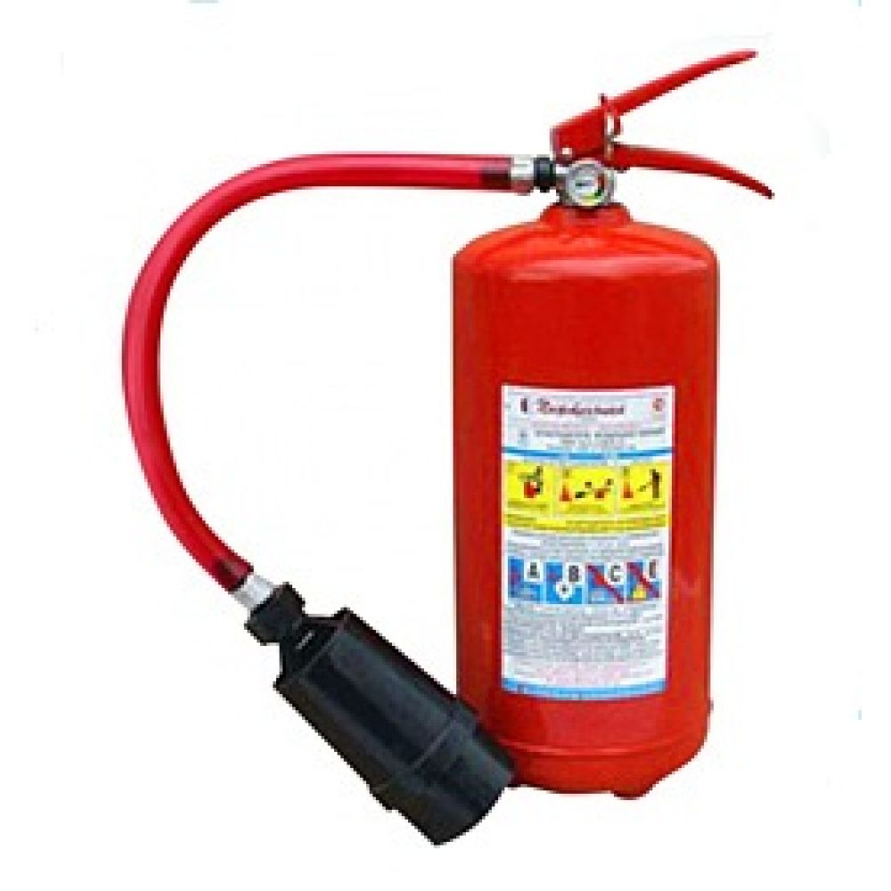
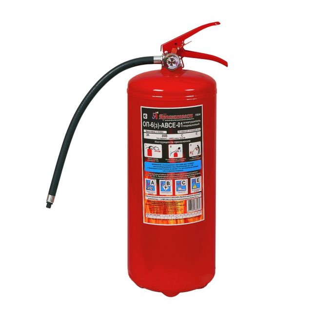
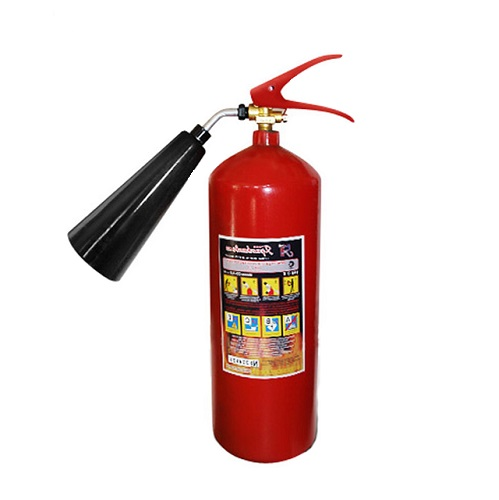

Воздушно-пенный огнетушитель
Огнетушители воздушно-пенные используются при тушении пожаров класса А и В (дерево, бумага, краски и ГСМ). Запрещается применение воздушно-пенных огнетушителей для тушения электроустановок, находящихся под напряжением!
Порошковый огнетушитель
Порошковые огнетушители используют в качестве огнетушащего средства специальный порошок. Отличительной особенностью данного вида огнетушителей является их универсальность и возможность эксплуатировать в очень широком диапазоне температур
Углекислотный огнетушитель
Углекислотные огнетушители предназначены для тушения пожаров классов B, C, E. То есть может использоваться для гашения возгораний жидких, газообразных веществ и электроустановок, рабочее напряжение которых не превышает 10 000 вольт